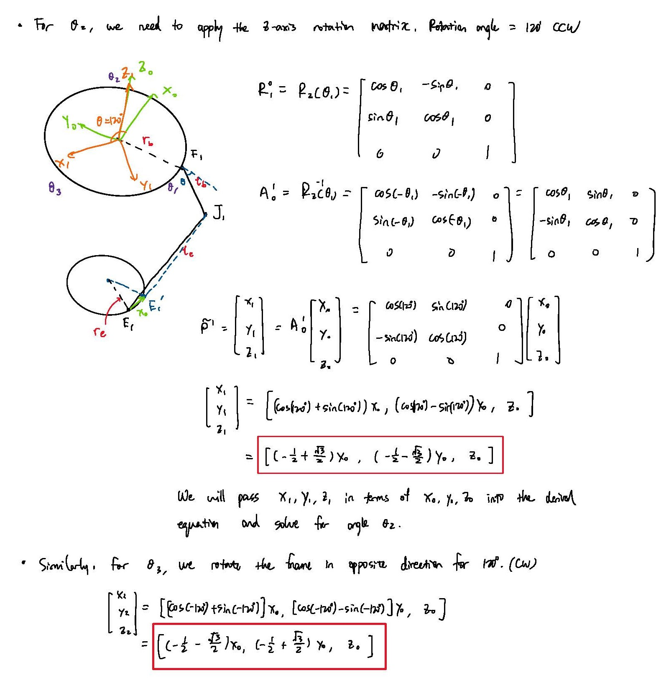

Delta Drawing Robot
This project was made in collaboration with Giovanni Fava.
The project features a delta-configuration robot manipulator with a pen attached as an end effector. The prompt was to make the robot arm to write down our initials, but we programmed it in a way that it accepts any coordinates command written in csv format.
Most of the robot was made with off-the-shelf components. MakerBeamXL, RC rod ends, digital servo motors, servo driver, and a raspberry Pi. Some connection pieces were 3D-printed to suit our custom needs.
Presentation Video
Image Gallery

The Design
My partner and I broke down the design tasks, and I was in charge of designing the parallel arm structures and the end effector. I salvaged the RC rod ends from one of my previous projects - they act like universal joints with a limited swivel angle of about 25 degrees. Two rod ends were joined by a threaded steel rod to form a lower linkage, and I ended up using the precut 50mm MakerBeams for the upper linkage. I joined the arm segments with 3D-printed adapters, each has built-in slots for embedded M3 nuts to secure the rod ends.
Delta Arms Movement Test
As for the end effector which is also 3D-printed, I designed a simple vertical tube structure at its center to house various models of Micron® Pens. I implemented a spring-loaded system with rubber bands to add some mechanical compliance to the system. The end effector also has slots for embedded nuts similar to the beam adapters.
Click here to view the CAD design in GrabCAD. The entire model was made in collaboration with my partner, who designed the outer framework and the servo clamping mechanism.
To ensure that the end effector is parallel to the workspace, I built a fixture to help align the rod end assemblies to the exact same length of 248mm. I then secured the threads with Loctite® Threadlocker to prevent the connections from loosening. For the upper linkages, I ended up tapping threads to the MakerBeams and secured them to the brackets which then get connected to the servos.

Fabrication and assembly of the delta linkages
The Inverse Kinematics
Below is my derivation of the inverse kinematics model of the system. I took heavy inspiration of this website, but decided to try to derive the equations myself again to gain a better understanding of the concepts. After the calculations, I validated my calculations using a simplified SolidWorks model; then I used MATLAB to get a symbolic solution to the system of equations, which I then copied to the Python code implemented in the onboard Raspberry Pi.

Inverse Kinematics Derivation
Python Implementation
I wrote two classes for the purpose of this robot: one for calculating the inverse kinematics and the other for moving the servo motors with angle commands. With a combination of the two classes, I then wrote a front end script which takes in a CSV file that contains a series of XYZ coordinates, compute the servo angles, and draw out the patterns in the workspace. Check out the presentation video for the final performance of the robot!
Click here to view the complete code on GitHub.
Assembly / Prototyping
Assembly Process